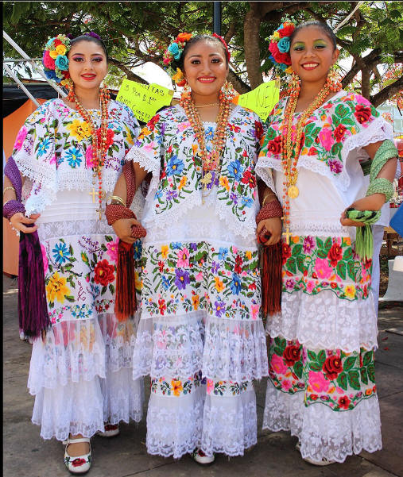
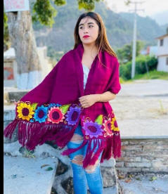
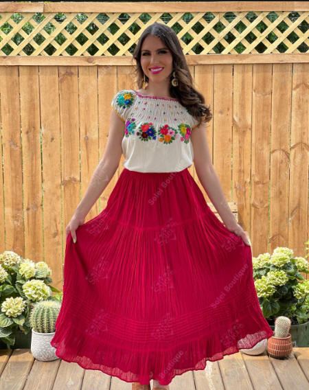
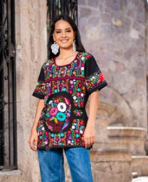
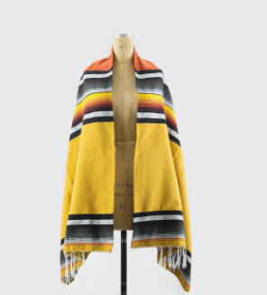
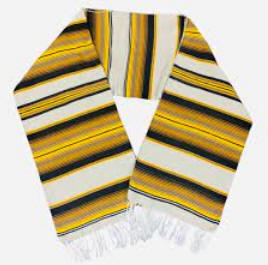
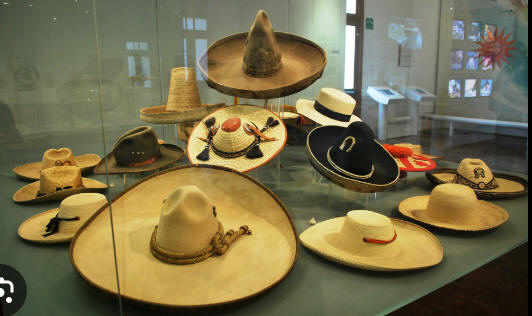
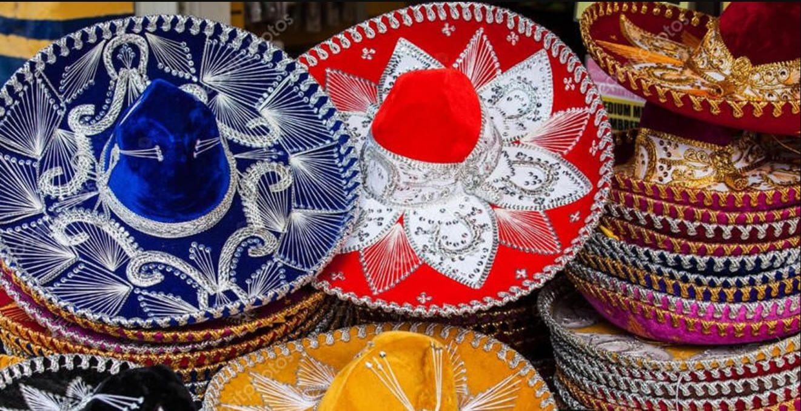
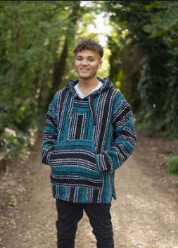

|
|
| Mexican Clothing |
|
⚫Latin-american and Hispanic culture in Mexico ⚫Mexican Festivals ⚫Mexican Food ⚫Mexican Dance ⚫Mexican Clothing ⚫Tourist spots in Mexico ⚫Contact us for queries ⚫Back to Home page |
Traditional Mexican clothing is a colorful and vibrant display of identity, combining native and European elements. Some of the most common traditional clothing styles in Mexico include: Huipil: A sleeveless tunic that is often loose-fitting and made of elaborately woven cloth. It is a key garment in traditional Mexican clothing. Rebozo: A woolen and vertically striped shawl-like garment that is often worn by women. Mexican skirts: These are ankle-to-knee length skirts that are often brightly colored and heavily embroidered. Colonial-style blouse: This blouse has been widely adopted in indigenous areas of Mexico and is inspired by the European chemise. It has replaced the huipil in many communities. Sarape: A vibrantly colored garment with a fringe that is used as a shawl-like coat and also as a blanket. Sombrero: A tall and wide-brimmed hat designed to shade one from the sun Baja Jacket: A jacket made popular by the Californian hippie/surf subculture that represents a banner to fly under for surfers everywhere. Mexican clothing is often made of natural materials such as cotton, wool, silk, agave, and bark, and is brightly colored and heavily embroidered. Traditional Mexican dress does not follow the same conventions as European styles of clothing, and instead, rectangles of elaborately woven cloth are sewn together to create boxy garments. Lacework and embroidery also feature widely in traditional Mexican clothing |